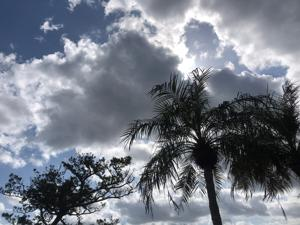
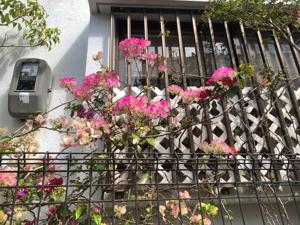

うるがいの話 ある日
最新: 床屋へいく【うるがいの話 ある日】とは 一日だけのプログです
『うるがいの話』の最新一日だけのプログで、通信料が少なく経済的だ。カニの画像をクリックすると全ての日付が載る『うるがいの話』サイトを表示します
|
|
【うるがいの話】 うるがい(ｳﾙｶﾞｲ urugai)とは、『もずくがに』の名前でとても大きくなります。 |
|---|---|
|
|
【カミマヤーの話】 猫のことを方言でマヤーといいます。カミマヤー（kamimayaa）とは、神の猫のことです。 |
|
【たながぁの音楽】 たながぁ（ﾀﾅｶﾞｰ tanagaa）とは手長えびのことで、何種類かあり大きいのは車 エビぐらいになります。 |

|
【ぶながぁの話】 ぶながぁ(ﾌﾞﾅｶﾞｰ bunagaa)とは、赤い髪の毛、赤い身体、そして身長は１ｍ２０ｃｍ ぐらい、川の蟹を食べているの目撃された。場所は沖縄県国頭郡大宜味村のと ある村僕の隣近所に住んでいる爺さんから、聞いた話です。 |
|
|
【ギーマの話】 ギーマ(giima)とは、山原の里山に咲くスズランに似た、 花を付けます。実は食べられます、 気が付くと口の周りが紫になっています。 |
2023年03月09日 (木）床屋へいく
16:54
 
徒歩で床屋の帰りに、グラデーションが見事なブーゲンビリアをスマホで撮る
すると、そこの家の主婦の人が、家から出たと思ったらさっと家に隠れた。ス
マホで写真を撮った事が、分かったのだろうか。床屋さんは９時４５分だが早
めの９時３０分にお願いする。先ほど１１時には、既に予約が入っているとい
っていたが、予約ができる時間ってありますかと尋ねると、電話が繋がればい
つでも、ホー、ところである人は年金支給日（各定期支給月の１５日）に必ず
散髪する固定客がいるとのこと。年齢は近そうな床屋の旦那が、初めて年金を
取るため１５日に銀行へ行くと、トンでもなく人で混雑していたと、それから
は支給日が過ぎた日に行っている。ホー（確実に年上である）。そして、ハブ
の話に、床屋さんが山にいくときは、皆で石を投げていたと。ホー、そんな難
儀な事と初めて聞いた、ところで旦那さんはどこですかと尋ねると那覇の山下
町あたり、ホー（山じゃないジャン）。そのあと世界遺産ヤンバル育ちの私は
はハブに絡む武勇伝を延々と語った。お義母さんの妹から、ヨメに病院に入院
しているお義母さんの姉が老衰のため、数日のうちに亡くなると連絡が入る。
ローソンで１０枚入り１３０円の香典袋を買う。
１６時５０分 ビットコインの総資産 ￥８、５９９（↓１２１）